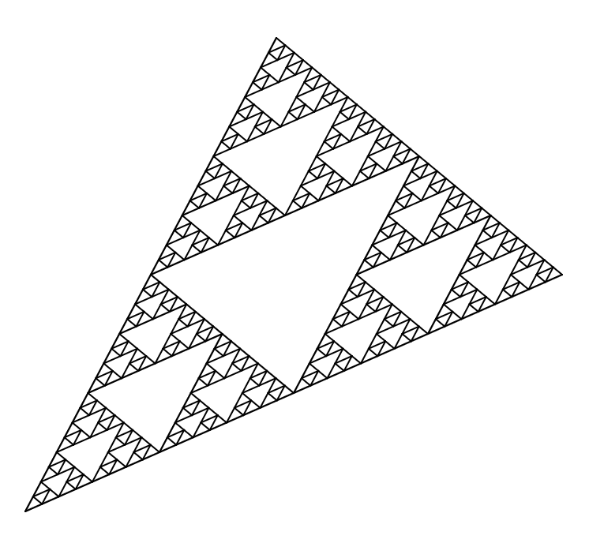

Do you like making cool art? Are you new to programming? If you answered yes to those questions, you are in the right place. In this journey, we'll be exploring together how to create the pattern you see below, called Sierpinski Triangle. Along with way, we will learn some basic concepts used in programming. Use the navigation bar on the top-left to begin!
